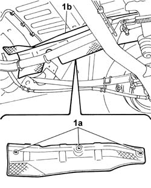
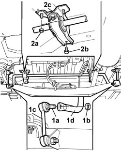
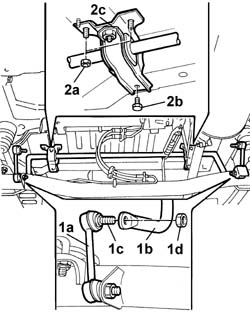

4420C08 rear suspension stabiliser bar r r with interfering parts removed
- Path
- Procedures > 44 SUSPENSION AND WHEELS > 4420 REAR SUSPENSION > 4420C rear suspension stabilizer bar/links > 4420C08 rear suspension stabiliser bar r r with interfering parts removed
- Kind
- repair procedure (removal / refitting; the operation number is the code)
- Applies to
- all engines; all production periods
- Interactive page
- https://sloeber94.github.io/elrnDB-fDbl/en/#/2584755
Applies to: all engines; all production periods; only with equipment: Doblò trim level
 Removing
Removing
 Refitting
Refitting1. Undo retaining nuts (1a) and remove the exhaust pipe central guard (1b).

Applies to: all engines; all production periods; only with equipment: Doblò trim level
1. Holding stud (1a) secure, unscrew nut (1b) and separate joints (1c) from the antiroll bar (1d).
2. Undo nuts (2a) and the bolt (2b) securing bracket (2c), then remove the antiroll bar.

Applies to: all engines; all production periods; only with equipment: Doblò trim level
Refitting
RemovingPosition the antiroll bar.
1. Connect the joints (1a) to the anti-roll bar (1b) and keep stud (1c) secured as you tighten retaining nut (1d) to torque.
 | Fastening | Component | Ø | Value (daNm) |
|---|---|---|---|---|
1d | Nut | REAR ANTI-ROLL BAR PIVOTS | M10 x 1.25 | (Anti-roll bar) 5.2 |
2. Tighten nuts (2a) and bolt (2b) securing the antiroll bar bracket (2c);
| Fastening | Component | Ø | Value (daNm) |
|---|---|---|---|---|
2a | Nut | REAR ANTI-ROLL BAR SUPPORTS | M8 | 1.6 |
| Fastening | Component | Ø | Value (daNm) |
|---|---|---|---|---|
2b | Bolt | REAR ANTI-ROLL BAR SUPPORTS | M8 | 1.6 |

Applies to: all engines; all production periods; only with equipment: Doblò trim level
Fit the central heat shields for the exhaust pipe and tighten the fixing nuts.